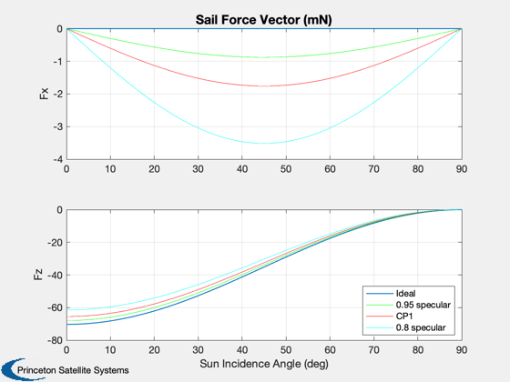
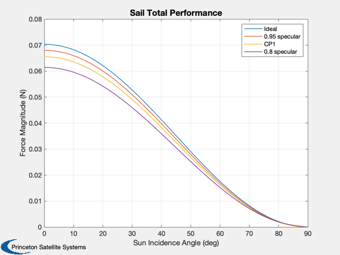
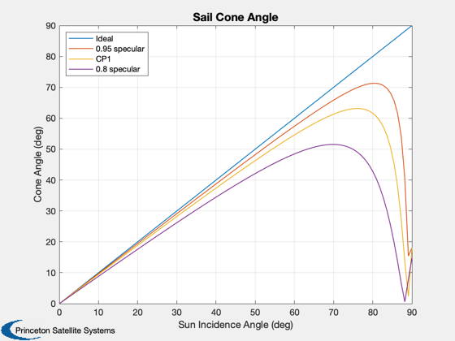
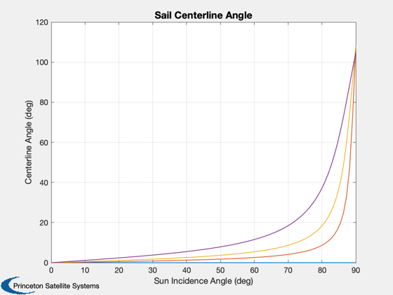
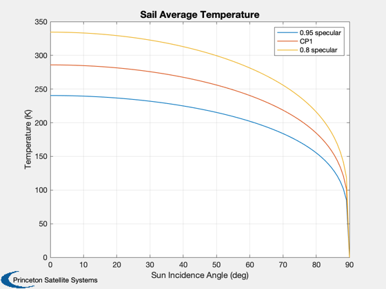
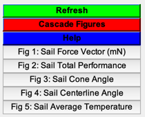

Compare the solar pressure force for ideal and nonideal circular sails.
Compare an ideal, perfectly specular sail with CP1 material (about 90
and two other fictional materials. Also computes the temperature, but
note that the temperature is not defined for the perfect sail since it
depends on the absorption coefficient being nonzero.
Since version 7.
------------------------------------------------------------------------
See also SailMesh, CP1Props, SolarPressureForce, PolygonProps, Figui,
Plot2D, Dot, Mag, Unit, SolarFlx
------------------------------------------------------------------------
Contents
Circular sail perimeter
theta = linspace(0,2*pi,20);
theta = theta(1:end-1);
rSail = 50;
x = rSail*cos(theta);
y = rSail*sin(theta);
[v,f] = SailMesh( x, y );
[a, n, r] = PolygonProps( v, f );
nEl = length(a);
CP1 properties - about 90% specular
[optical, infrared, thermal] = CP1Props;
specular = [1 0.95 optical.sigmaS(1) 0.8];
diffuse = [0 0.01 optical.sigmaD(1) 0.05];
absorp = [0 0.04 optical.sigmaA(1) 0.15];
Solar flux at 1 AU
flux = SolarFlx( 1.0 );
Create a vector of incidence angles in x/z plane
theta = linspace(0,pi/2);
nPts = length(theta);
uSun = [sin(theta);zeros(size(theta));cos(theta)];
fTotal = cell(1,4);
coneAngle = zeros(4,nPts);
centerAngle = zeros(4,nPts);
Tavg = zeros(4,nPts);
for k = 1:4
opt = optical;
opt.sigmaS(1) = specular(k);
opt.sigmaD(1) = diffuse(k);
opt.sigmaA(1) = absorp(k);
ems = thermal.emissivity;
fSail = zeros(3,nPts);
for j = 1:nPts
[fEl, T, fT] = SolarPressureForce( a', n', uSun(:,j), flux, ...
opt, ems );
Tavg(k,j) = mean(T);
fSail(:,j) = fT;
end
coneAngle(k,:) = acos(Dot(Unit(fSail),-uSun));
centerAngle(k,:) = acos(Dot(Unit(fSail),-[0;0;1]));
fTotal{k} = fSail;
end
Plot the results
angles = theta*180/pi;
aLabl = 'Sun Incidence Angle (deg)';
sailLabl = {'Ideal', '0.95 specular', 'CP1', '0.8 specular'};
Plot2D(angles, [fTotal{1}([1 3],:)]*1000, aLabl,{'Fx','Fz'},'Sail Force Vector (mN)');
subplot(2,1,1)
hold on
plot(angles, fTotal{2}(1,:)*1000, 'g');
plot(angles, fTotal{3}(1,:)*1000, 'r');
plot(angles, fTotal{4}(1,:)*1000, 'c');
subplot(2,1,2)
hold on
plot(angles, fTotal{2}(3,:)*1000, 'g');
plot(angles, fTotal{3}(3,:)*1000, 'r');
plot(angles, fTotal{4}(3,:)*1000, 'c');
legend(sailLabl{:},'location','southeast')
Plot2D(angles, [Mag(fTotal{1});Mag(fTotal{2});Mag(fTotal{3});Mag(fTotal{4})], ...
aLabl,'Force Magnitude (N)','Sail Total Performance');
legend(sailLabl{:});
Plot2D(angles, coneAngle*180/pi, aLabl,'Cone Angle (deg)','Sail Cone Angle');
legend(sailLabl{:},'location','NorthWest');
Plot2D(angles, centerAngle*180/pi,...
aLabl,'Centerline Angle (deg)','Sail Centerline Angle');
Plot2D(angles, Tavg(2:4,:),...
aLabl,'Temperature (K)','Sail Average Temperature');
legend(sailLabl{2:4});
Figui;
     